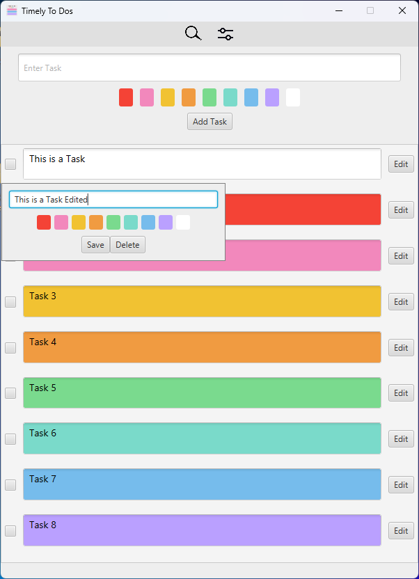
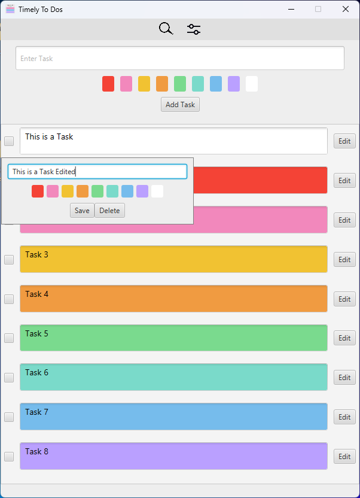

Weather App


Role: Programmer | Team of 1 | GitHub GitHub
- Developed a Java-based weather app with detailed reporting features including wind speeds, precipitation, and humidity displays, integrating public API data.
- Implemented a user-friendly GUI using Java Swing, incorporating a dark mode feature based on user feedback.
- Learned and enhanced data processing skills through JSON parsing and utilization of Java's Date and Time utilities for accurate weather information presentation.
Technologies used: Java, JSON, Date and Time Utilities, Java Swing
Timely To Dos - Task Management Application
 

Role: Programmer | Team of 1 | GitHub GitHub | Releases
- Successfully developed a comprehensive task management application using Java, enabling users to efficiently create, organize, and track their to-do items, as demonstrated by robust task handling capabilities and user-friendly interface.
- Learned and integrated SQLite database functionality to ensure persistent storage of tasks, allowing users to maintain their to-do lists across multiple sessions.
- Incorporated additional features such as task filtering, and search task. These features were added in response to user feedback and personal usage insights.
Technologies used: Java, JavaFX, Maven, SQLite